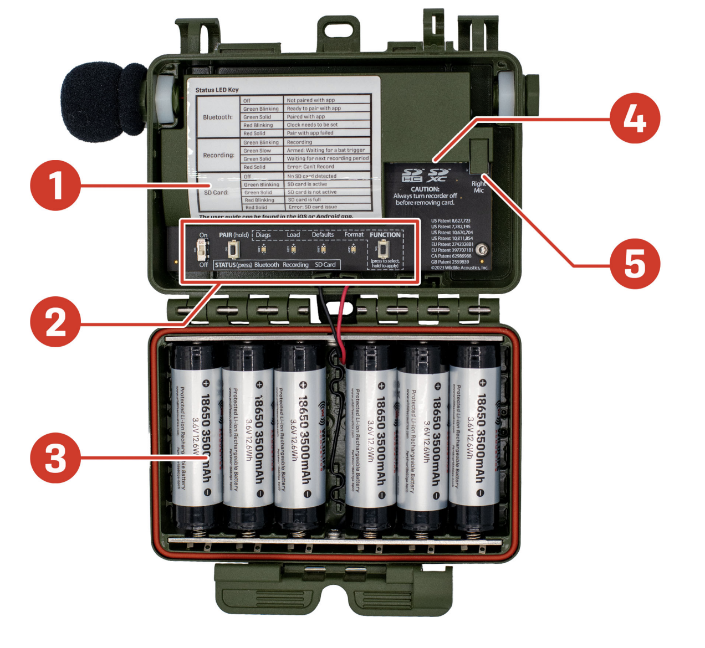
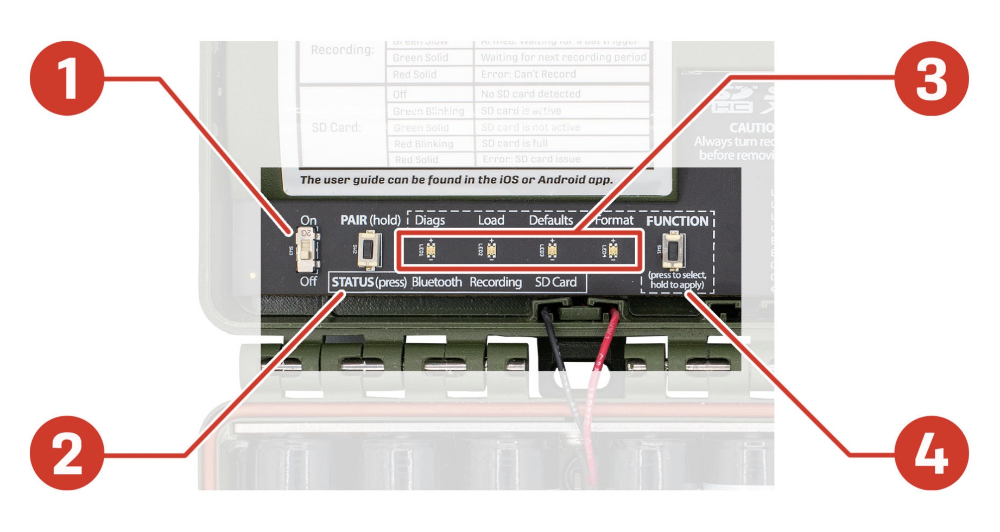
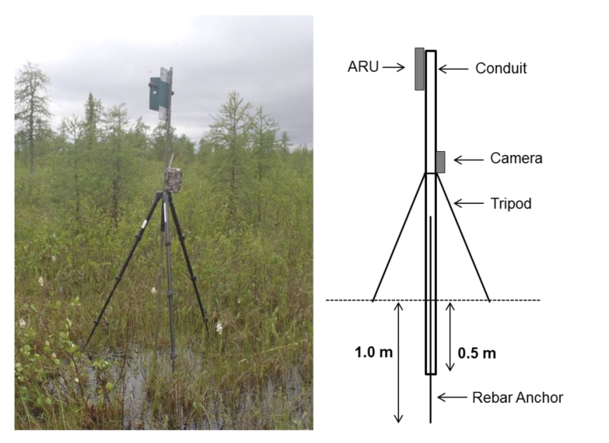

{kind=link}
| Item | Notes |
|---|---|
| Smartphone with GPS | Used to log the exact coordinates of each deployment. |
| Standard data sheet | One per deployment to record site information and metadata for later entry into WildTrax. |
| Wildlife Acoustics Songmeter Configurator App | Installed and paired via Bluetooth before heading out. |
| 4–8 AA alkaline batteries | More batteries allow longer runtime and more data collection. |
| 1 × Class 10 32 GB SD card | Formatted and ready before deployment. |
| Screws and screwdriver | Used for mounting to a stake, post, or tree. |
| 1–1.5 m stake or rebar | Needed in open, treeless environments. |
| Zip ties or a lock | Secures the housing against tampering or curious wildlife (fits a 0.25 in / 6 mm opening). |
Acoustic monitoring pilot for Mongolia
Executive Summary

This pilot program is a collaboration between Alinea International’s ECCO-FARM project, Biodiversity Pathways Ltd., Khustai National Park, the University of Alberta, the University of Northern British Columbia and URECA, to pilot the use of passive acoustic monitoring technology in Mongolia.
Overview
This guide supports the use of the Wildlife Acoustics Song Meter Mini 2 (SM Mini 2) in Mongolia as part of a pilot program applying autonomous recording units (ARUs; Shonfield and Bayne (2017)) for biodiversity and soundscape monitoring. It is written for first-time users and walks through understanding the basic uses of the device, deploying it in the field, retrieving data, and managing recordings in WildTrax.
NotePilot status
This is the first deployment cycle for this program. If a step in the field doesn’t match what’s described here, note it, so this guide can be enhanced and improved into the future.
Understand
An autonomous recording unit (ARU) is a passive recording device that captures the acoustic environment: bird calls, amphibian choruses, insect activity, wind, humans, and other ambient sound, without having a person present. ARUs are left unattended in the field on a fixed recording schedule, then retrieved later so the audio can be reviewed and analyzed for species presence and soundscape activity. Detections of sounds are determined by the environment and the detectability of the signal in question (Figure 1).
The SM Mini 2 is built for this kind of unattended deployment:
- Weatherproof (IP67-rated) housing that withstands rain, snow, dust, and temperature swings which makes it well-suited to Mongolia’s exposed, variable field conditions.
- Long battery life on AA batteries, letting the unit run for weeks to months depending on the recording schedule chosen.
- Bluetooth configuration via the free Song Meter Configurator app (iOS/Android), so the unit can be set up and checked without opening the housing.
- Preset recording schedules covering common monitoring use cases (e.g., dawn chorus, continuous recording, hourly sampling), so a unit can be deployed without writing a custom schedule from scratch.
Deploy
Gear Checklist
For a single ARU unit you will need the equipment identified in Table 1.
For this pilot, use the default schedules provided in the Songmeter Configurator App rather than a custom schedule, this keeps setup consistent across all units and observers.
{kind=link}
Pairing an ARU to the Configurator App


- Unlatch and open the lid
- Insert batteries
- Insert the SD card
- Slide the ON/OFF switch to ON
- Ensure Bluetooth is enabled on your phone
- Open the Song Meter Configurator app; press and hold the PAIR/STATUS button on the Song Meter for 3 seconds; the Bluetooth LED will blink green
- In the app Recorders screen, the PAIR icon is displayed next to the Song Meter Mini 2; tap the PAIR icon; the icon will turn green when successful
- Tap YES to automatically set the recorder’s time zone to your mobile device’s time zone
{kind=link}
Choose a schedule
{kind=link}
Once you have paired the next step is to set a schedule. For this pilot, select Record birds/frogs for 5 minutes of every hour. At this setting:
- The recorder has roughly 35 recording days before the SD card fills up.
- The batteries should last approximately 5 months in the field.
{kind=link}
TipWhy this schedule
Five minutes per hour balances data volume against battery and data storage limits, while still sampling activity across the full diel cycle, which is useful for a first pilot where deployment length, species and retrieval logistics aren’t yet fully known.
Site selection and mounting
Open, treeless environment:
- Mount the ARU on a wooden stake or metal rebar, driven at least 1/3 of its length into the ground to keep it stable.
- Position the unit 0.5–1 m above the ground — high enough to reduce wind interference with the microphones.
- Orient the microphones against the direction of prevailing wind to reduce wind noise in recordings.
- In areas where wildlife may disturb the unit, a metal security cage can be used (Alberta Biodiversity Monitoring Institute (2019)).
{kind=link}
Treed environment:
- Secure the unit to the trunk with screws or a locking security cable.
- Mount at 1.5 m height, facing north, this is the standard orientation used across the pilot, making it easier to compare recordings and determine sound direction across sites and also limits direct sun exposure on the unit in the norther hemisphere.

Note
A third option exists if ARUs are deployed in wetland environments (Alberta Biodiversity Monitoring Institute (2019)).

.Finalize the deployment
- In the Configurator app, confirm the unit shows as active/recording on the selected schedule.
- Close and latch the housing lid securely.
- Disconnect / unpair from the Configurator app.
- Record the site ID, GPS coordinates, date/time, and any habitat notes on the data sheet.
Retrieve
- Open the unit’s lid and press and hold the Bluetooth pairing button.
- Open the Configurator app and locate the unit to re-pair.
- Check battery level and SD card usage to confirm recordings were captured successfully.
- Turn the unit off before removing the SD card — always power down first to avoid file corruption.
- Disassemble the unit from its mount (stake or tree), whichever setup was used.
WarningAlways power off first
Never remove the SD card while the unit is powered on. Doing so can corrupt in-progress recordings or the file system on the card.
Manage with WildTrax
WildTrax; MacPhail et al. (2026) is the online platform used to store, process, and share ARU recordings collected during this pilot. It is software platform managed and developed in partnership by the Alberta Biodiversity Monitoring Institute. Over 600 Organizations worldwide use WildTrax for their environmental sensor data and co-benefits. WildTrax allows you to extract the soundscape and species information from your recordings while managing the associated metadata and allowing you to share and combine data with other in a harmonized way.
Follow the WildTrax Guide Basics section on how to Get Started.
Create an Organization
Organizations bring together groups of researchers and users collaborating on diverse research initiatives. Organizations oversee equipment, manage locations and media, and have the ability to create projects using the media they own.
{kind=link}
Customize Organization settings such a data storage location for uploaded media (e.g. WildTrax DataCenter or Amazon Web Services), and setting appropriate data privacy metadata (e.g. buffering locations, setting user memberships).
{kind=link}
Upload recordings
- From the ARU project, use the upload tool to select the folder containing the recordings pulled from the SD card.
- WildTrax accepts the default
.wavaudio formats and configurations from the Wildlife Acoustics recordings. - Once uploaded, use Manage → Download Recordings to export a CSV of everything in the Organization, or generate tasks to assign recordings for review and species tagging.
NoteNote for this pilot
Since this is the first deployment cycle, keep a copy of the raw SD card data as backup until uploads and processing are confirmed successful in WildTrax.
References
Alberta Biodiversity Monitoring Institute. 2019. “Terrestrial ABMI Autonomous Recording Unit (ARU) and Remote Camera Trap Protocols.” Field Protocol. Alberta Biodiversity Monitoring Institute. https://abmi.ca/publication/565.html.
Gibb, Ruth, Emma Browning, Paul Glover-Kapfer, and Kate E. Jones. 2019. “Emerging Opportunities and Challenges for Passive Acoustics in Ecological Assessment and Monitoring.” Methods in Ecology and Evolution 10: 169–85. https://doi.org/10.1111/2041-210X.13101.
MacPhail, Alexander G., Corrina Copp, Erin Bayne, Charles Francis, Michael Packer, Chad Klassen, Kevin Kelly, et al. 2026. “WildTrax: A Platform for the Management, Storage, Processing, Sharing and Discovery of Avian Data.”
MacPhail, Alexander G., Daniel A. Yip, Elly C. Knight, Richard Hedley, Michelle Knaggs, Julia Shonfield, and Erin M. Bayne. 2024. “Audio Data Compression Affects Acoustic Indices and Reduces Detections of Birds by Human Listening and Automated Recognisers.” Bioacoustics 33 (1): 74–90. https://doi.org/10.1080/09524622.2023.2290718.
Shonfield, Julia, and Erin M Bayne. 2017. “Autonomous Recording Units in Avian Ecological Research: Current Use and Future Applications.” Avian Conservation & Ecology 12 (1).